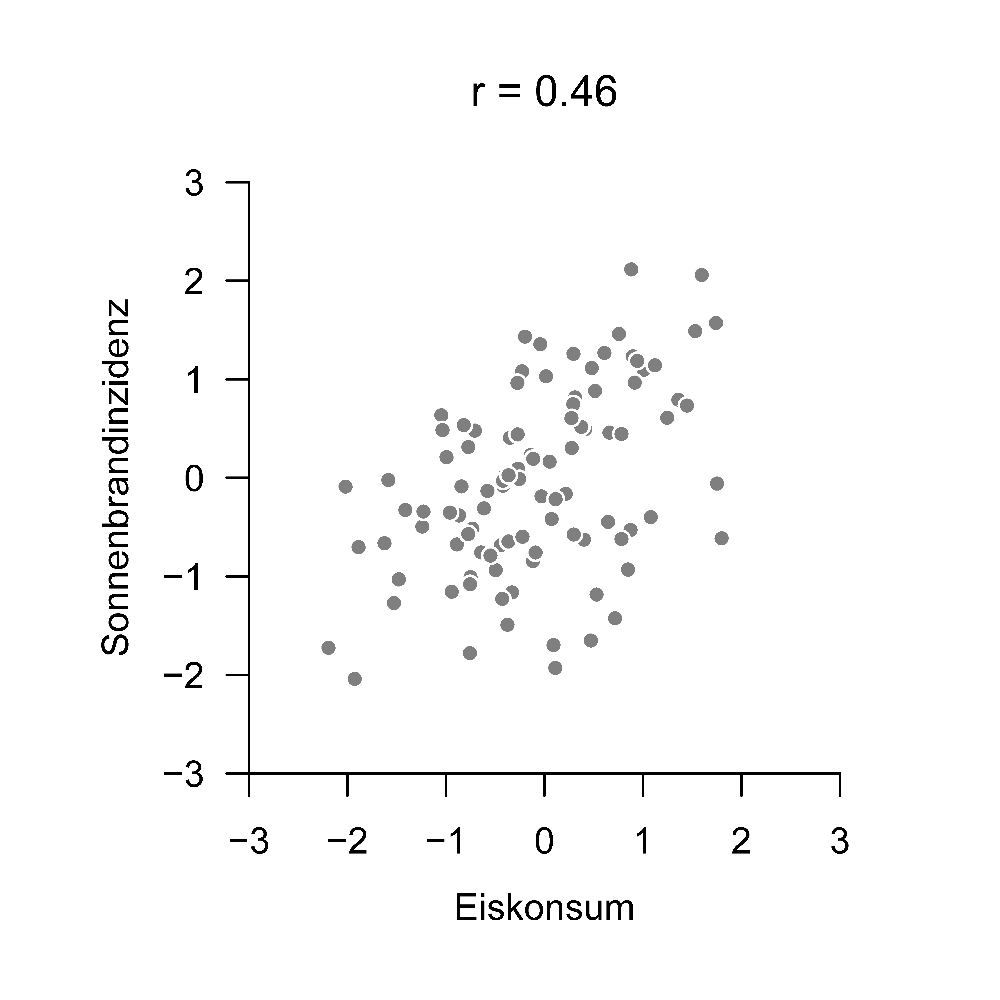

# Conditional correlation under normality
S = matrix(c( 1,.5,.9, # Sigma
.5, 1,.5,
.9,.5, 1), nrow = 3, byrow = TRUE)
rho_xy = S[1,2]/(sqrt(S[1,1])*sqrt(S[2,2])) # rho(x,y)
S_xy_z = S[1:2,1:2] - S[1:2,3] %*% solve(S[3,3]) %*%S[3,1:2] # Sigma_{x,y|z}
rho_xy_z = S_xy_z[1,2]/(sqrt(S_xy_z[1,1])*sqrt(S_xy_z[2,2])) # rho(x,y|z)43 Partial correlation
43.1 Motivation
To motivate the concept of partial correlation, we first consider the example data set visualized in Figure 43.1 on the association between ice-cream consumption and sunburn incidence. We imagine that each data point in Figure 43.1 represents one pair of values consisting of an average and normalized ice-cream consumption value and an average and normalized sunburn-incidence value for one country over some observation period. Visually, the data suggest that high values of ice-cream consumption tend to occur together with high values of sunburn incidence, whereas low values of ice-cream consumption tend to occur together with low values of sunburn incidence. The sample correlation coefficient for this data set is \(r=0.46\), a moderately strong positive correlation.

Intuitively, however, it seems rather implausible that ice-cream consumption causes sunburn, or that sunburn increases ice-cream consumption. These scenarios are not entirely impossible: a particular type of ice cream could trigger an allergic reaction whose symptoms resemble sunburn, and conversely people with sunburn might enjoy eating ice cream to cool down. We will not pursue these rather implausible explanations here. The data set in Figure 43.1 is therefore an example of the fact that correlation, as a measure of the linear association of two random variables, is only a measure of the coincidence of particular data values; it does not imply a causal explanation of the values of one dependent variable by the values of an independent variable. Since the beginning of modern inferential statistics in the early twentieth century, this fact has often been summarized by the maxim “correlation is not causation”.
Starting from the negative insight that a moderately strong correlation such as the one between ice-cream consumption and sunburn incidence is very unlikely to be explained by a direct causal relation between the two variables, one may ask to what extent other data-analytic procedures can help. This immediately raises the philosophical question of what causality is supposed to mean, followed by the question of how such a concept could be evaluated with the tools of probability theory and inferential statistics. This is the approach pursued in the field of causal inference, for example in the work of Pearl (2000) and Imbens & Rubin (2015). We do not pursue this approach here. Instead, we ask how additional data can make the observed correlation between ice-cream consumption and sunburn incidence more plausible as a statistical description of the data shown in Figure 43.1. This is the central topic of partial correlation.
For this purpose, we assume that the association between ice-cream consumption and sunburn incidence (Figure 43.2 A) can plausibly be explained by the covariation of both variables with a third variable, namely the number of summer days during the observation period and in the respective country, that is, days with a maximum temperature above \(25^\circ\) Celsius (Figure 43.2 B).

Intuitively, the positive correlation between ice-cream consumption and sunburn incidence can then be explained as follows. If more summer days occur during the observation period in a country, both ice-cream consumption and sunburn incidence increase in that country; if fewer summer days occur, both ice-cream consumption and sunburn incidence decrease. If the number of summer days is ignored, high values of ice-cream consumption and sunburn incidence, as well as low values of ice-cream consumption and sunburn incidence, therefore occur together frequently, which results in the positive correlation implied by Figure 43.1.
The decisive question in this context is whether there is evidence for a correlation between ice-cream consumption and sunburn incidence at a fixed number of summer days. In that case, the covariance between ice-cream consumption and sunburn incidence would be considered conditional on a constant number of summer days. The data-analytic tools for evaluating this form of conditional correlation, given realizations of three random variables, are provided by the concept of conditional correlation and by the closely related concept of partial correlation. Intuitively, this is the correlation between two random variables after the influence of a third random variable has been “partialled out” of both of them. The concepts of conditional and partial correlation are not limited to the scenario of three random variables, but can be generalized to any number of random variables. In this chapter, however, we restrict ourselves to the scenario of three random variables in order to explain the basic theory.
We proceed as follows. We first introduce conditional covariance and conditional correlation as general measures of the linear-affine association of two random variables conditional on the values of a third random variable. We then clarify these concepts in the scenario of three jointly multivariate normally distributed random variables and discuss the relation between conditional correlation and pairwise, unconditional correlations. We then introduce partial correlation as a regression-based measure of the conditional association of two random variables. In particular, it turns out that conditional and partial correlation are identical for jointly multivariate normally distributed random variables. We close the chapter by evaluating the partial correlation between ice-cream consumption and sunburn incidence in light of the number of summer days for the data set visualized in Figure 43.1.
43.2 Conditional correlation
We first define the conditional covariance and the conditional correlation of two random variables given a third random variable.
Definition 43.1 (Conditional covariance and conditional correlation) Let \(x,y,z\) be three random variables with joint distribution \(\mathbb{P}_{x,y,z}(x,y,z)\). Furthermore, let \(\mathbb{P}_{x, y \vert z}(x,y)\) be the conditional distribution of \(x\) and \(y\) given \(z\). The covariance of \(x\) and \(y\) in the distribution \(\mathbb{P}_{x, y \vert z}(x,y)\) is called the conditional covariance of \(x\) and \(y\) given \(z\) and is denoted by \(\mathbb{C}(x, y \vert z)\). Furthermore, let \(\mathbb{P}_{x, y \vert z}(x)\) and \(\mathbb{P}_{x, y \vert z}(y)\) be the marginal distributions of \(x\) and \(y\) given \(z\), respectively, and let \(\mathbb{S}(x\vert z)\) and \(\mathbb{S}(y\vert z)\) be the standard deviations of \(x\) and \(y\) with respect to \(\mathbb{P}_{x, y \vert z}(x)\) and \(\mathbb{P}_{x, y \vert z}(y)\), respectively. Then the correlation of \(x\) and \(y\) in the distribution \(\mathbb{P}_{x, y \vert z}(x,y)\), \[\begin{equation} \rho(x, y \vert z):=\frac{\mathbb{C}(x, y \vert z)}{\mathbb{S}(x\vert z) \mathbb{S}(y\vert z)} \end{equation}\] is called the conditional correlation of \(x\) and \(y\) given \(z\).
The conditional covariance of two random variables is thus defined as the covariance of two random variables in a distribution conditional on a third random variable. The same applies to the conditional correlation of two random variables. By exchanging variables in the definition above, one can analogously define \(\rho(y,z\vert x)\) and \(\rho(x,z\vert y)\). We next clarify Definition 43.1 with an example.
Example
Let \(x,y,z\) be multivariate normally distributed random variables, that is, for \(\gamma := (x,y,z)^T\) let \[\begin{equation} \gamma \sim N(\mu, \Sigma) \end{equation}\] with \[\begin{equation} \mu:= \begin{pmatrix} \mu_{x} \\ \mu_{y} \\ \mu_{z} \end{pmatrix} \mbox{ and } \Sigma:=\begin{pmatrix} \sigma_{x}^{2} & \sigma_{x,y}^{2} & \sigma_{x,z}^{2} \\ \sigma_{y,x}^{2} & \sigma_{y}^{2} & \sigma_{y, z}^{2} \\ \sigma_{z,x}^{2} & \sigma_{z,y}^{2} & \sigma_{z}^{2} \end{pmatrix}. \end{equation}\] Suppose that we want to determine the conditional correlation of \(x\) and \(y\) given \(z\). We therefore consider the conditional distribution of \(x\) and \(y\) given \(z\). By Theorem 29.6, this conditional distribution is again a normal distribution whose covariance-matrix parameter can be determined from the covariance-matrix parameter of the joint distribution of \(x,y,z\). For this purpose, define \[\begin{equation} \Sigma_{x,y} := \begin{pmatrix} \sigma_{x}^{2} & \sigma_{x,y}^{2} \\ \sigma_{y,x}^{2} & \sigma_{y}^{2} \end{pmatrix}, \Sigma_{z} := \left(\sigma_{z}^{2}\right) \mbox{ and } \Sigma_{(x,y), z} :=\Sigma_{z,(x,y)}^{T} := \begin{pmatrix} \sigma_{x,z}^{2} \\ \sigma_{y, z}^{2} \end{pmatrix}, \end{equation}\] so that the covariance-matrix parameter of the joint distribution of \(x,y,z\) can be written as \[\begin{equation} \Sigma = \begin{pmatrix} \Sigma_{x,y} & \Sigma_{(x,y), z} \\ \Sigma_{z,(x,y)} & \Sigma_{z} \end{pmatrix}. \end{equation}\] By Theorem 29.6, the covariance-matrix parameter of the random vector \((x,y)^T\) conditional on \(z\) is \[\begin{equation} \Sigma_{x, y \vert z} = \Sigma_{x,y}-\Sigma_{(x,y), z} \Sigma_{z}^{-1} \Sigma_{z,(x,y)}. \end{equation}\] The properties of multivariate normal distributions then imply that the diagonal entries of \(\Sigma_{x, y \vert z}\) are the conditional variances of \(x\) and \(y\) given \(z\), and that the off-diagonal entry of \(\Sigma_{x, y \vert z}\) is the conditional covariance of \(x\) and \(y\) given \(z\). In other words, \[\begin{equation} \Sigma_{x, y \vert z} = \begin{pmatrix} \mathbb{C}(x,x\vert z) & \mathbb{C}(x,y \vert z) \\ \mathbb{C}(y,x\vert z) & \mathbb{C}(y,y\vert z) \end{pmatrix}. \end{equation}\] The conditional correlation \(\rho(x, y \vert z)\) of \(x\) and \(y\) given \(z\) is then obtained from the entries of \(\Sigma_{x, y \vert z}\) as \[\begin{equation} \rho(x, y \vert z) = \frac{\mathbb{C}(x, y \vert z)}{\sqrt{\mathbb{C}(x,x\vert z)}\sqrt{\mathbb{C}(y, y\vert z)}}. \end{equation}\] For example, let the covariance-matrix parameter of \((x,y,z)^T\) be \[\begin{equation} \Sigma := \begin{pmatrix} 1.0 & 0.5 & 0.9 \\ 0.5 & 1.0 & 0.5 \\ 0.9 & 0.5 & 1.0 \end{pmatrix}. \end{equation}\] Then \[\begin{equation} \rho(x,y)=0.50 \mbox{ and } \rho(x, y \vert z) \approx 0.13. \end{equation}\] The following R code demonstrates the evaluation of this conditional correlation.
rho(x,y) : 0.5
rho(x,y|z) : 0.1343.3 Conditional correlation under normality
For the case of three jointly normally distributed random variables, the following theorem provides a way to determine the conditional correlation of two of these random variables given the third from the pairwise, unconditional correlations of the random variables. For example, if \(x,y,z\) are jointly normally distributed, \(\rho(x, y \vert z)\) can be determined from the correlations \(\rho(x,y)\), \(\rho(x,z)\), and \(\rho(y,z)\). Specifically, the following theorem holds.
Theorem 43.1 (Conditional correlation and correlations under normality) Let \(x,y,z\) be three jointly multivariate normally distributed random variables. Then \[\begin{equation} \rho(x,y \vert z) = \frac{\rho(x,y)-\rho(x,z) \rho(y, z)}{\sqrt{\left(1-\rho(x,z)^{2}\right)} \sqrt{\left(1-\rho(y, z)^{2}\right)}}. \end{equation}\]
Proof. Without loss of generality, consider a standardized multivariate normally distributed random vector \(\gamma := (x,y,z)^T\) with covariance-matrix parameter \[\begin{equation} \Sigma := \begin{pmatrix} 1 & \rho(x,y) & \rho(x,z) \\ \rho(y, x) & 1 & \rho(y, z) \\ \rho(z, x) & \rho(z, y) & 1 \end{pmatrix}. \end{equation}\] Define \[\begin{equation} \Sigma_{x,y} := \begin{pmatrix} 1 & \rho(x,y) \\ \rho(y, x) & 1 \end{pmatrix}, \Sigma_{z}:=(1) \mbox{ and } \Sigma_{(x,y), z}:=\Sigma_{z,(x,y)}^T := \begin{pmatrix} \rho(x,z) \\ \rho(y, z) \end{pmatrix}, \end{equation}\] so that \[\begin{equation} \Sigma = \begin{pmatrix} \Sigma_{x,y} & \Sigma_{(x,y), z} \\ \Sigma_{z,(x,y)} & \Sigma_{z} \end{pmatrix}. \end{equation}\] By Theorem 29.6, the covariance matrix of the random vector \((x,y)\) conditional on \(z\) is \[\begin{equation} \Sigma_{x, y \vert z} = \Sigma_{x,y} - \Sigma_{(x,y), z} \Sigma_{z}^{-1} \Sigma_{z,(x,y)}. \end{equation}\] It follows that \[\begin{equation} \begin{aligned} \begin{pmatrix} \sigma_{x, x\vert z}^{2} & \sigma_{x, y \vert z}^{2} \\ \sigma_{y, x\vert z}^{2} & \sigma_{y, y\vert z}^{2} \end{pmatrix} & = \begin{pmatrix} 1 & \rho(x,y) \\ \rho(y, x) & 1 \end{pmatrix} - \begin{pmatrix} \rho(x,z) \\ \rho(y, z) \end{pmatrix}(1)^{-1} \begin{pmatrix} \rho(x,z) & \rho(y, z) \end{pmatrix} \\ & = \begin{pmatrix} 1 & \rho(x,y) \\ \rho(y, x) & 1 \end{pmatrix} - \begin{pmatrix} \rho(x,z)^2 & \rho(x,z) \rho(y, z) \\ \rho(y, z) \rho(x,z) & \rho(y, z)^2 \end{pmatrix} \\ & = \begin{pmatrix} 1-\rho(x,z)^2 & \rho(x,y)-\rho(x,z) \rho(y, z) \\ \rho(y, x)-\rho(y, z) \rho(x,z) & 1-\rho(y, z)^2 \end{pmatrix}. \end{aligned} \end{equation}\] Therefore, \[\begin{equation} \rho(x, y \vert z) = \frac{\sigma_{x, y \vert z}^{2}}{\sqrt{\sigma_{x, x\vert z}^{2}} \sqrt{\sigma_{y, y\vert z}^{2}}} =\frac{\rho(x,y)-\rho(x,z) \rho(y, z)}{\sqrt{1-\rho(x,z)^2} \sqrt{1-\rho(y, z)^2}}. \end{equation}\] If realizations of \(x,y,z\) are available, the corresponding estimator for \(\rho(x, y \vert z)\) based on the sample correlations \(r_{x,y}\), \(r_{x,z}\), and \(r_{y,z}\) is \[\begin{equation} r_{x, y \vert z} = \frac{r_{x,y}-r_{x,z} r_{y, z}}{\sqrt{\left(1-r_{x,z}^{2}\right)} \sqrt{\left(1-r_{y, z}^{2}\right)}}. \end{equation}\]
43.4 Partial correlation
We next define the partial correlation of two random variables given a third random variable.
Definition 43.2 (Partial correlation) Let \(x,y,z\) be random variables with linear-affine dependencies between \(x\) and \(z\) as well as between \(y\) and \(z\), \[\begin{equation} \begin{aligned} x &:=\beta_{0}^{x, z} + \beta_{1}^{x, z}z \\ y &:=\beta_{0}^{y, z} + \beta_{1}^{y, z}z \end{aligned} \end{equation}\] with residual variables \[\begin{equation} \begin{aligned} & \varepsilon^{x, z} := x-\beta_{0}^{x, z}-\beta_{1}^{x, z}z \\ & \varepsilon^{y, z} := y-\beta_{0}^{y, z}-\beta_{1}^{y, z}z. \end{aligned} \end{equation}\] Then the partial correlation of \(x\) and \(y\) with \(z\) partialled out is defined as \[\begin{equation} \rho(x,y \backslash z):=\rho\left(\varepsilon^{x, z}, \varepsilon^{y, z}\right). \end{equation}\]
Intuitively, in the above definition the random variable \(\varepsilon^{x,z}\) corresponds to the random variable \(x\) after the influence of \(z\) has been partialled out, and \(\varepsilon^{y,z}\) corresponds to the random variable \(y\) after the influence of \(z\) has been partialled out. Thus \(\rho(x,y \backslash z)\) is the correlation of \(x\) and \(y\) after the influence of \(z\) has been partialled out of both variables. We next give an estimator for the partial correlation of two random variables given a third random variable.
Definition 43.3 (Partial sample correlation) Let \(x,y,z\) be random variables with linear-affine dependencies between \(y\) and \(z\) as well as between \(x\) and \(z\) as in the definition of partial correlation. Furthermore, let
- \(\{(x_i, y_i, z_i)\}_{i=1,\ldots,n}\) be a set of realizations of the random vector \((x,y,z)^T\),
- \(\hat{\beta}_{0}^{x,z}, \hat{\beta}_{1}^{x,z}\) be the least-squares line parameters for \(\{(x_i,z_i)\}_{i=1,\ldots,n}\),
- \(\hat{\beta}_{0}^{y,z}, \hat{\beta}_{1}^{y,z}\) be the least-squares line parameters for \(\{(y_i,z_i)\}_{i=1,\ldots,n}\).
Finally, for \(i=1,\ldots,n\), let
- \(e_i^{x,z} := x_i-\hat{\beta}_{0}^{x,z}-\hat{\beta}_{1}^{x,z}z_i\),
- \(e_i^{y,z} := y_i-\hat{\beta}_{0}^{y,z}-\hat{\beta}_{1}^{y,z}z_i\)
be the residual values of the respective least-squares lines. Then the sample correlation of the value set \(\{(e_i^{y,z}, e_i^{x,z})\}_{i=1,\ldots,n}\) is called the partial sample correlation of the \(x_i\) and \(y_i\) with the \(z_i\) partialled out.
For the case in which \(x,y,z\) are multivariate normally distributed, the following theorem, whose proof we omit, gives the relation between conditional and partial correlation.
Theorem 43.2 (Conditional and partial correlation under normality) Let \(x,y,z\) be three jointly multivariate normally distributed random variables. Then \[\begin{equation} \rho(x, y \vert z)=\rho(x,y \backslash z). \end{equation}\]
Note that the theorem above holds for three multivariate normally distributed random variables. In general, that is, for arbitrary distributions of the three random variables, conditional and partial correlations are not identical. Further details are discussed, for example, by Lawrance (1976) and Baba et al. (2004).
Together with Theorem 43.1, Theorem 43.2 immediately implies that, under joint normality of \(x,y,z\), the partial correlation \(\rho(x,y \backslash z)\), like the conditional correlation \(\rho(x,y \vert z)\), can be determined from the unconditional correlations \(\rho(x,y)\), \(\rho(x,z)\), and \(\rho(y,z)\), or estimated from the corresponding sample correlations.
The following R code demonstrates the evaluation of the partial sample correlation based on a simulated data set of three multivariate normally distributed random variables. We determine the partial correlation once from the residual sample correlation as in Definition 43.3, once from the pairwise sample correlations by Theorem 43.2, and finally with the pcor() function from the R package ppcor. The result is identical in all three cases.
# Model formulation and data realization
library(MASS) # multivariate normal distribution
set.seed(1) # reproducible data
S = matrix(c( 1,.5,.9, # covariance-matrix parameter Sigma
.5, 1,.5,
.9,.5, 1),nrow=3,byrow=TRUE)
n = 1e6 # number of realizations
xyz = mvrnorm(n,rep(0,3),S) # realizations
# Partial sample correlation as residual sample correlation
bars = apply(xyz, 2, mean) # sample means
s = apply(xyz, 2, sd) # sample standard deviations
c = cov(xyz) # sample covariances
b_xz1 = c[1,3]/c[3,3] # beta_1 (x,z)
b_xz0 = bars[1] - b_xz1*bars[3] # beta_0 (x,z)
b_yz1 = c[2,3]/c[3,3] # beta_1 (y,z)
b_yz0 = bars[2] - b_yz1*bars[3] # beta_0 (y,z)
e_xz = xyz[,1] - b_xz1*xyz[,3] - b_xz0 # residual values e^{x,z}
e_yz = xyz[,2] - b_yz1*xyz[,3] - b_yz0 # residual values e^{y,z}
pr_e = cor(e_xz,e_yz) # rho(x,y\z)
# Partial sample correlation from sample correlations
r = cor(xyz) # sample correlation matrix
pr_r_n = r[1,2]-r[1,3]*r[2,3] # rho(x,y\z) formula numerator
pr_r_d = sqrt((1-r[1,3]^2)*(1-r[2,3]^2)) # rho(x,y\z) formula denominator
pr_r = pr_r_n/pr_r_d # rho(x,y\z)
# Partial sample correlation from a toolbox
if (requireNamespace("ppcor", quietly = TRUE)) {
pr_t = ppcor::pcor(xyz)$estimate[1,2]
} else {
pr_t = pr_r
}r(x,y) : 0.5
r(x,y/z) from residual correlation : 0.13
r(x,y/z) from correlations : 0.13
r(x,y/z) from toolbox : 0.13Application example
Using the R code introduced above, we finally return to the introductory example of the association between ice-cream consumption and sunburn incidence. We assume that for each value pair of ice-cream consumption \((x_i)\) and sunburn incidence \((y_i)\), the corresponding value of the number of summer days \((z_i)\) during the observation period and in the respective country is available. The theory above then makes it possible to determine the partial correlation between ice-cream consumption and sunburn incidence after correcting for the number of summer days.

In Figure 43.3, the axis label Eiskonsum | Sommertage represents the residual values \[\begin{equation}
e_{i}^{x, z} := x_{i}-\hat{\beta}_{0}^{x, z}-\hat{\beta}_{1}^{x, z}z_{i}
\end{equation}\] and the axis label Sonnenbrandinzidenz | Sommertage represents the residual values \[\begin{equation}
e_{i}^{y, z} := y_{i}-\hat{\beta}_{0}^{y, z}-\hat{\beta}_{1}^{y, z}z_{i}.
\end{equation}\] One can see that there is no systematic association between high or low values of Eiskonsum | Sommertage and high or low values of Sonnenbrandinzidenz | Sommertage. Accordingly, the correlation of these residual values is only \(r=0.17\), rather than \(r=0.46\) as for the values of ice-cream consumption and sunburn incidence that have not been corrected for covariation with the number of summer days (cf. Figure 43.1). The association between ice-cream consumption and sunburn incidence implied by the correlation analysis that ignores the number of summer days can therefore be explained, or explained away, by the covariation of both variables with the third variable summer days.
43.5 Literature notes
The theory of partial and conditional correlations has received attention at least since the beginning of modern correlation analysis in the early twentieth century; compare, for example, Pearson (1920), Yule (1907), or Fisher (1924).
Baba, K., Shibata, R., & Sibuya, M. (2004). Partial correlation and conditional correlation as measures of conditional independence. Australian & New Zealand Journal of Statistics, 46(4), 657–664. https://doi.org/10.1111/j.1467-842X.2004.00360.x
Fisher, R. A. (1924). The Distribution of the Partial Correlation Coefficient. Metron, 3, 329–332.
Imbens, G., & Rubin, D. B. (2015). Causal Inference for Statistics, Social, and Biomedical Sciences: An Introduction. Academic Press.
Lawrance, A. J. (1976). On Conditional and Partial Correlation. The American Statistician, 30(3), 146–149. https://doi.org/10.1080/00031305.1976.10479163
Pearl, J. (2000). Causality: Models, reasoning, and inference. Cambridge University Press.
Pearson, K. (1920). Notes on the history of correlation. Biometrika, 13(1), 25–45. https://doi.org/10.1093/biomet/13.1.25
Yule, G. U. (1907). On the Theory of Correlation for any Number of Variables, Treated by a New System of Notation. Proceedings of the Royal Society of London. Series A, Containing Papers of a Mathematical and Physical Character, 79(529), 182–193. https://www.jstor.org/stable/92723